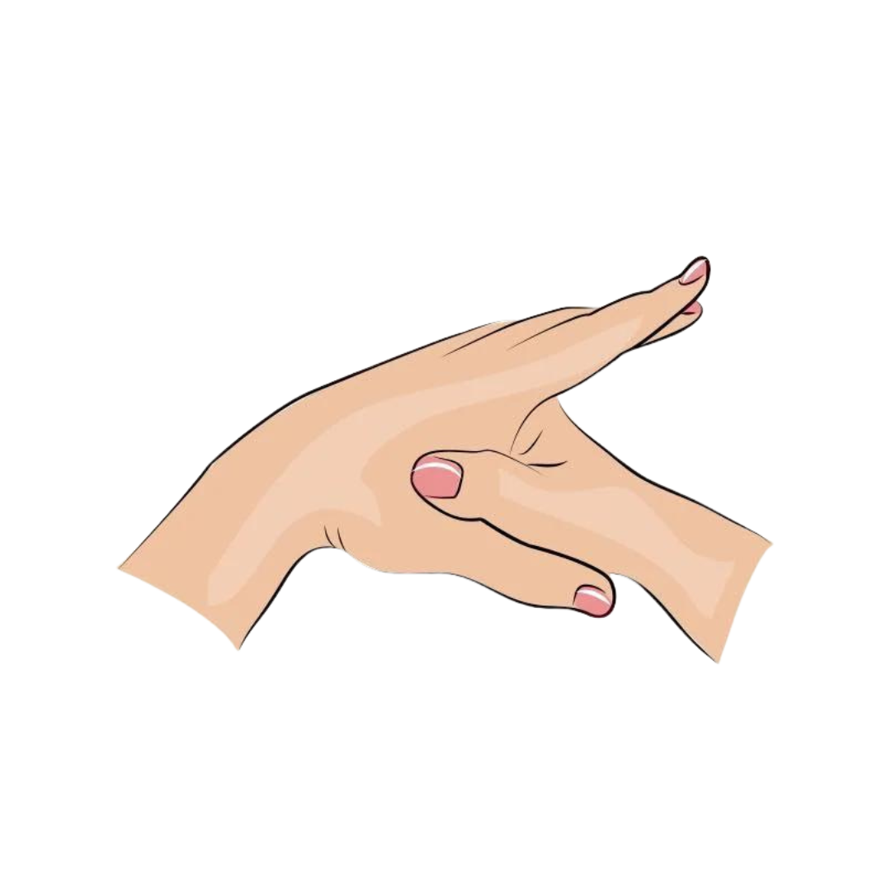

Local seguro


Verifique a consciência, tentando chamar pelo
nome, faça perguntas como "Oi pode me ouvir?"
caso não tenha resposta realize estímulo doloroso entre dedos das mãos;
Chame por ajuda
Verifique as vias aéreas (nariz e boca) para garantir que nada esteja bloqueando
a passagem
de
ar. Em seguida, observe se há movimentação na região do peito (tórax).
Verifique o pulso carotídeo, se caso não houver pulso e respiração, inicie a massagem cardíaca (compressões torácicas);